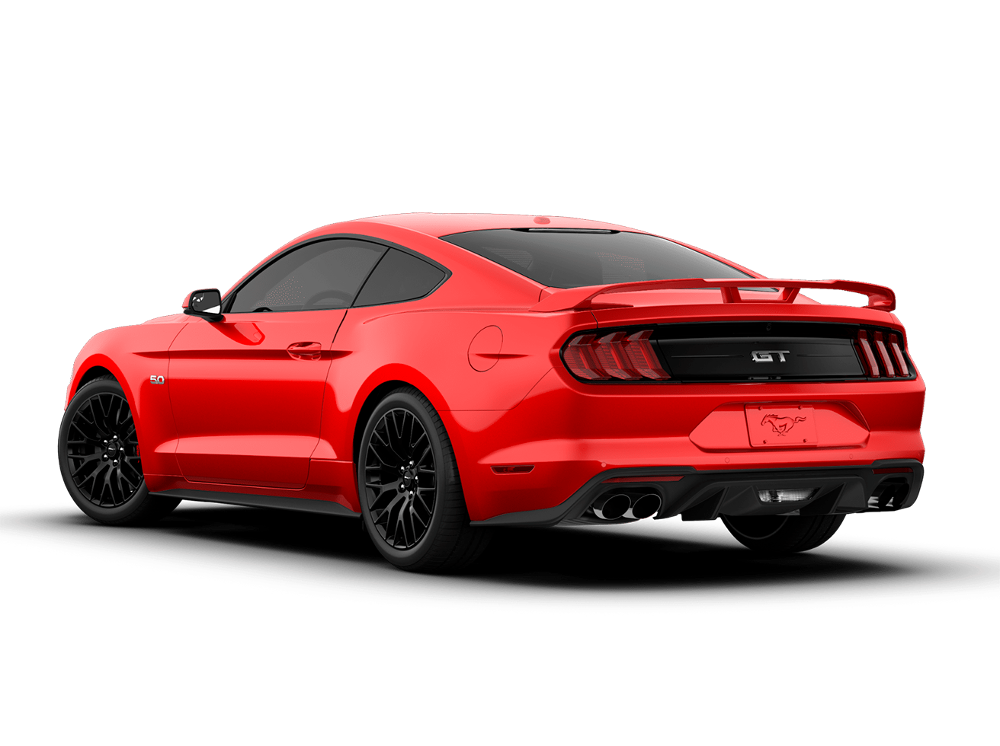

Ford Mustang GT
De 1964 até hoje
O pony car que virou símbolo de liberdade e juventude.
A Ford foi fundada em 1903 por Henry Ford. Em 1908 chegou o Model T, um carro simples, resistente e barato. Em 1913, a linha de montagem reduziu o tempo de produção de 12 horas para 1h33.
De 1964 até hoje
O pony car que virou símbolo de liberdade e juventude.
O Mustang foi lançado em 1964 para conquistar o público jovem, que queria um carro esportivo, bonito e barato. Foi um sucesso e criou os "pony cars".
O ronco do motor 5.0 é uma marca registrada.
Dirigir esportivo no estilo clássico.
Aparece em filmes, jogos e músicas há mais de 60 anos.

Mais de 10 milhões de unidades produzidas até 2018. O Mustang GT une história, desempenho e estilo.